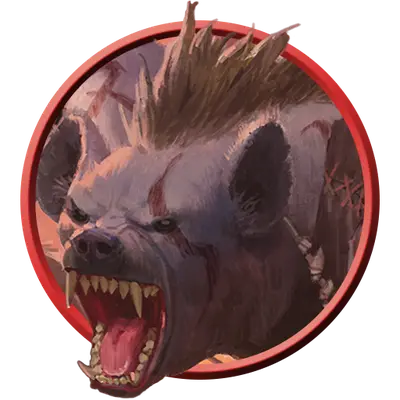

Вожак стаи гноллов
Gnoll Pack Lord
Среднее Исчадие, Хаотичное Злое

Класс Защиты 15 Инициатива +4 (14)
Хиты 49 (9к8 + 9)
Скорость 30 футов
| мод | спас | ||
|---|---|---|---|
| СИЛ | 16 | +3 | +3 |
| ЛОВ | 14 | +2 | +2 |
| ТЕЛ | 13 | +1 | +1 |
| мод | спас | ||
|---|---|---|---|
| ИНТ | 8 | −1 | −1 |
| МДР | 11 | +0 | +0 |
| ХАР | 9 | −1 | −1 |
Чувства Тёмное зрение 60 футов, пассивное Восприятие 10
Языки Гноллий
Опасность 2 (450 опыта; БВ +2)
Действия
Мультиатака. Гнолл совершает две атаки Костяным кнутом или Костяным пилумом в любой комбинации и использует Разжигание буйства, если оно доступно.
Костяной кнут. Бросок рукопашной атаки: +5, досягаемость 10 фт. Попадание: 8 (2к4 + 3) Рубящего урона.
Костяной пилум. Бросок дальнобойной атаки: +5, дистанция 30/120 фт. Попадание: 7 (1к8 + 3) Колющего урона.
Разжигание буйства (Перезарядка 5–6). Гнолл выбирает целью другое существо, которое он видит в пределах 60 футов от себя и обладает Бонусным действием Буйство. Цель может Реакцией совершить одну рукопашную атаку.
Бонусные действия
Буйство (2/день). Сразу после нанесения урона Окровавленному существу гнолл может переместиться на расстояние вплоть до половины своей Скорости и совершить одну атаку Костяным кнутом.
Бонус мастерства +2
Среда обитания Леса, Луга, Пустыня, Холмы
Сокровища Личные, Оружейные
Гноллы
Дикие плотоядные бестии
Первые гноллы произошли от гиен, которые питались плотью, испорченной Бездной. Демонический владыка Йеногу был в восторге от их порочности и жестокости, поэтому способствовал росту их численности и помог им расселиться по всей мультивселенной. С тех пор гноллы стали злорадными слугами этого повелителя демонов и живут, чтобы сеять разрушения и пировать на руинах.
Вожаки стаи гноллов превосходят остальных сородичей свирепостью и силой. Они подчиняют более слабых гноллов с помощью страха и вынуждают их совершать самые жестокие преступления, забирая себе лучшие из трофеев.